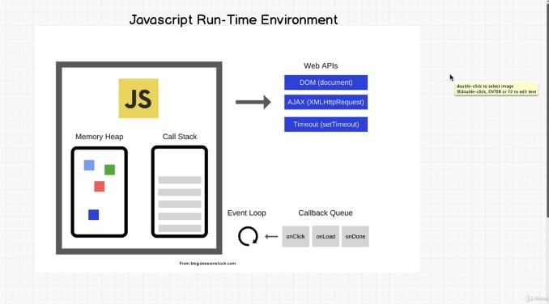

Stacks and queues
- linear data structures - go through the data sequentially - one by one - only 1 element can be directly reached
- the difference between the 2 is how items are deleted
- the last item added to the list becomes the first one and points back to the previous one
- ideal for operations on the beginning or the end of the data structures - pop, push
- are build on top of arrays and linked lists - with limited operations that can be performed on them
Stacks - think of it like a pile of plates
- the way to access data is to start from the last one to the first - LIFO - last in first out
- important in language specific engines - browser history, undo function - the last one appears first
- most important stack methods (O(1) time complexity)
- pop - remove the last item
-push - add am item at the end
- peek - view the last item of the stack
- when building a stack we can use both arrays and linked lists - but we need to think at pros and cons before deciding :
the arrays are cache friendly bc the items are stored sequentially
arrays can have expensive appends if there is no more space and it needs to be copied in a bigger space in memory
Queues - think of it like a normal queue for a restaurant reservation
- FIFO - first in first out
- used, for example to implement the order to assign the uber for the customers- the first to ask will receive the first free car
- most important build in methods (O(1) time complexity)
enqueue (push)
dequeue (like pop) - will remove from the first item
peek - view the first item in the queue
to implement a queue we don't want to use arrays as we would need to change the indexes for each dequeue
How does js works
Js is a single thread language (it has only 1 call stack and it executes one event at a time) that can be non blocking - synchronous execution
With single stack languages the stack can be overflowed - with recursions for example (when a function call itself) - we will have a infinite loop
Non blocking - asynchronous - setting a setTimeOut for a function before getting executed - it will pass the function to the js api -> after the time set is done, the function will be passed to the callback queue that will pass it back to the stack when the event loop will determine that the stack is empty and ready to receive a new item

think of synchronous and asynchronous like the difference between a phone call and respectively a text message to ask for something
- phone call -you are stack at the phone until the receiver wil answer your call
- the text message will allow you to carry on your activities until you are free to check the message received back from your interlocutor
Js engine is composed of the
- memory heap - the variables are stored
- call stack - takes care of the execution of the functions (1 at a time) - LIFO - last in first out